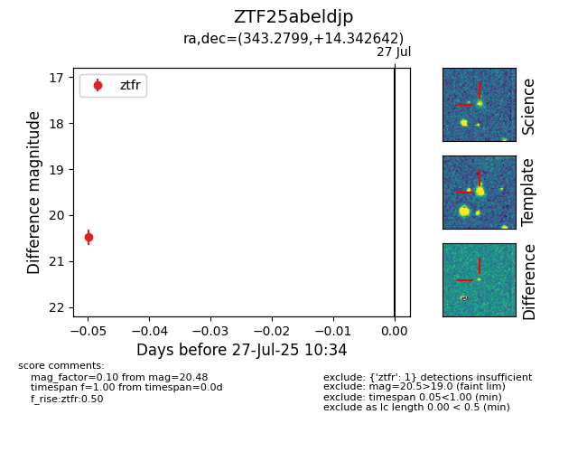

Target ZTF25abeldjp at 2025-07-27 10:34, see:
FINK: fink-portal.org/ZTF25abeldjp
Lasair: lasair-ztf.lsst.ac.uk/objects/ZTF25abeldjp
ALeRCE: alerce.online/object/ZTF25abeldjp
alt names
ZTF25abeldjp (ztf,fink)
coordinates:
equatorial (ra, dec) = (343.2799,+14.34264)
galactic (l, b) = (84.5904,-39.56226)
photometry
last ztfr=20.48
1 ztfr detections
